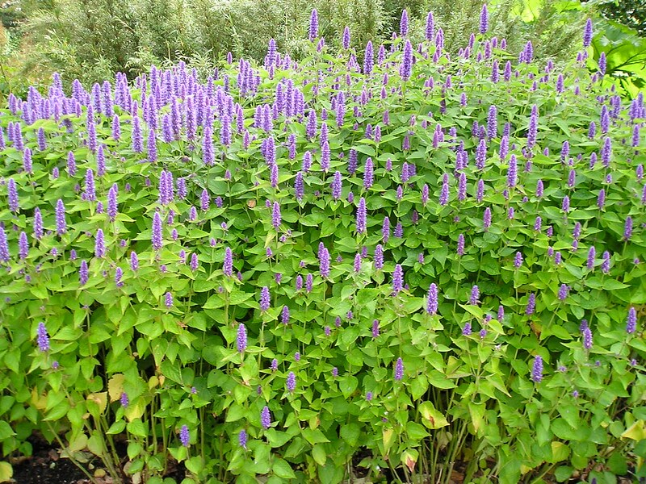
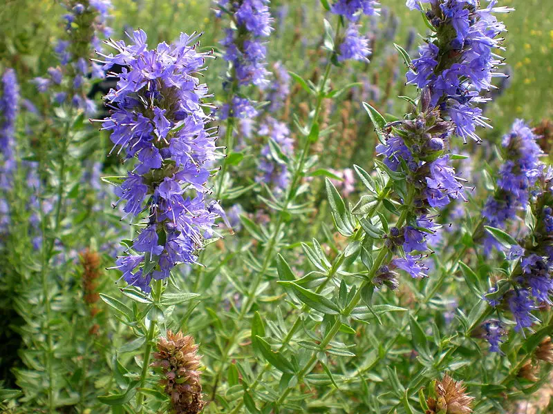
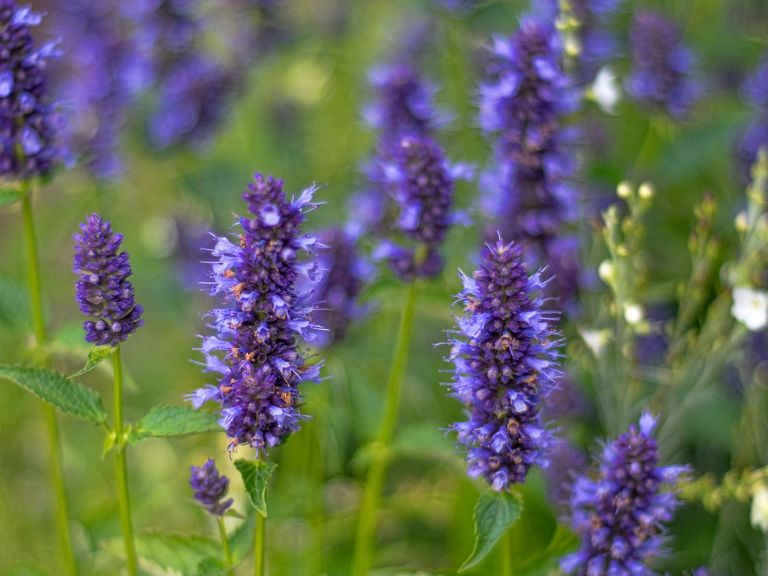
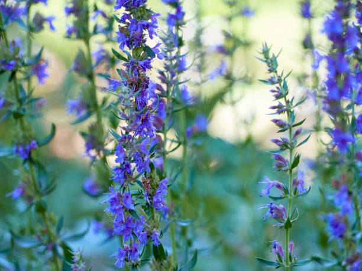

Meaning: Cleanliness
Origin
The meaning behind hyssop can be traced to ancient Greece, where the flower was used to clean and purify temples. In biblical times, the plant was even used to treat leprosy. Its cleansing aroma is a welcome addition in bouquets representing a new beginning.
Gallery



